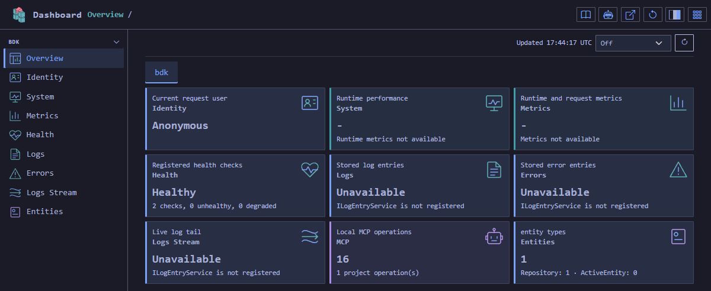

Add features¶
Every recipe starts from the host built in Build an app with DevKit. Pick the features your app needs. Recipes depend on the basics alone unless a Needs line says otherwise.
- 01Package
dotnet add package - 02Register
builder.Services.Add...() - 03Pipeline
app.Use...(), if needed - 04DbContext + migration
durable features only
Register shared services in Program.cs before builder.Build(). Registrations only the Customers area uses, such as a queue subscription, can go in CustomersModule.Register instead. Keep shared services such as the notifier in Program.cs. Put the usage endpoints below builder.Build() and before app.Run().
The Program.cs snippets use using Customers.Web; for the context and using Customers.Web.Modules.Customers; for feature types. Add those imports if the file does not already have them.
Use the same version for every DevKit package. Commands below run from Customers.Web in PowerShell 7.3 or later, as on the basics page.
No infrastructure needed¶
Logging and request diagnostics¶
Add structured logging and correlate the logs from each HTTP request.
dotnet add package BridgingIT.DevKit.Presentation.Serilog
Chain .AddLogging() on DevKitWebApplication.CreateBuilder(args). Merge this section into appsettings.json, keeping Modules:customers:
{
"Serilog": {
"Using": ["Serilog.Sinks.Console"],
"MinimumLevel": { "Default": "Information" },
"Enrich": ["FromLogContext"],
"WriteTo": [{ "Name": "Console" }]
}
}
Add correlation before module context and request logging before mapped endpoints:
app.UseRequestCorrelation();
app.UseRequestModuleContext();
app.UseRequestLogging();
app.UseModules();
app.MapModules();
app.MapEndpoints();
Check it
Request an existing endpoint with curl.exe -i. Expect the same response plus a CorrelationId header. See request correlation for propagation and header options.
Notifications and more behaviors¶
Publish an application notification after saving a customer, and add retry and timeout behaviors to the requester.
Step 10's domain event records what happened to the aggregate, and the repository publishes it after the save. Application code publishes this notification itself, for example to tell another module. A command has one handler. A notification can have none or many. Requester or notifier explains the choice.
namespace Customers.Web.Modules.Customers;
using BridgingIT.DevKit.Common;
public class CustomerCreatedNotification(Guid customerId) : NotificationBase
{
public Guid CustomerId { get; } = customerId;
}
public class CustomerCreatedNotificationHandler(
ILogger<CustomerCreatedNotificationHandler> logger)
: NotificationHandlerBase<CustomerCreatedNotification>
{
protected override Task<Result> HandleAsync(
CustomerCreatedNotification notification, PublishOptions options,
CancellationToken cancellationToken)
{
logger.LogInformation("customer {CustomerId} welcome requested", notification.CustomerId);
return Task.FromResult(Result.Success());
}
}
Register the notifier before builder.Build() if you skipped the optional domain-event step:
builder.Services.AddNotifier()
.AddHandlers();
The notifier discovers the new handler. In CustomerCreateCommand.cs, replace only the handler:
public class CustomerCreateCommandHandler(
IGenericRepository<Customer> repository, INotifier notifier)
: RequestHandlerBase<CustomerCreateCommand, Customer>
{
protected override async Task<Result<Customer>> HandleAsync(
CustomerCreateCommand request, SendOptions options,
CancellationToken cancellationToken)
{
var customer = Customer.Create(request.FirstName, request.LastName, request.Email);
await repository.InsertAsync(customer, cancellationToken);
var published = await notifier.PublishAsync(
new CustomerCreatedNotification(customer.Id), cancellationToken: cancellationToken);
return published.IsSuccess
? Result<Customer>.Success(customer)
: Result<Customer>.Failure().WithErrors(published.Errors);
}
}
public class CustomerCreateCommandHandler(IGenericRepository<Customer> repository)
: RequestHandlerBase<CustomerCreateCommand, Customer>
{
protected override async Task<Result<Customer>> HandleAsync(
CustomerCreateCommand request, SendOptions options,
CancellationToken cancellationToken)
{
var customer = Customer.Create(request.FirstName, request.LastName, request.Email);
await repository.InsertAsync(customer, cancellationToken);
return customer;
}
}
A notification failure returns a failed result after the customer has already been saved. Use the domain event outbox when the event must survive a process failure between saving and publication.
Add behaviors to the existing requester registration:
builder.Services.AddRequester()
.AddHandlers()
.WithBehavior(typeof(ValidationPipelineBehavior<,>))
.WithBehavior(typeof(RetryPipelineBehavior<,>))
.WithBehavior(typeof(TimeoutPipelineBehavior<,>));
Retry and timeout run only on request handlers marked with [HandlerRetry] or [HandlerTimeout]. These behaviors wrap command and query handlers. They do not wrap notification handlers.
[HandlerTimeout(500)]
public class CustomerFindOneQueryHandler(IGenericRepository<Customer> repository)
: RequestHandlerBase<CustomerFindOneQuery, Customer>
{
protected override async Task<Result<Customer>> HandleAsync(
CustomerFindOneQuery request, SendOptions options, CancellationToken cancellationToken)
{
return await repository.FindOneResultAsync(
request.Id, cancellationToken: cancellationToken);
}
}
public class CustomerFindOneQueryHandler(IGenericRepository<Customer> repository)
: RequestHandlerBase<CustomerFindOneQuery, Customer>
{
protected override async Task<Result<Customer>> HandleAsync(
CustomerFindOneQuery request, SendOptions options, CancellationToken cancellationToken)
{
return await repository.FindOneResultAsync(
request.Id, cancellationToken: cancellationToken);
}
}
If the query exceeds 500 ms, the timeout behavior throws a timeout exception. With the requester's default exception handling, the endpoint returns 500 Internal Server Error with an Exception Error problem response. See timeout options for cancellation and timeout settings. Mark retryable handlers with [HandlerRetry(3, 200)] only when repeating their work is safe.
Check it
curl.exe -i -H "CorrelationId: customers-notify-1" -X POST http://localhost:5199/api/customers -H "Content-Type: application/json" -d '{"firstName":"Grace","lastName":"Hopper","email":"grace@example.test"}'
Expect 201 Created. The command saves the customer and publishes the application notification.
Mapping¶
Return a model from the query so the domain entity no longer leaves the GET endpoint.
dotnet add package BridgingIT.DevKit.Common.Mapping
builder.Services.AddMapping().WithMapster();
Replace the query file. Mapster maps the matching property names without a custom mapping registration. The POST still returns Customer.
namespace Customers.Web.Modules.Customers;
using BridgingIT.DevKit.Common;
using BridgingIT.DevKit.Domain.Repositories;
public class CustomerModel
{
public Guid Id { get; set; }
public string FirstName { get; set; } = string.Empty;
public string LastName { get; set; } = string.Empty;
public string Email { get; set; } = string.Empty;
}
public class CustomerFindOneQuery(Guid id) : RequestBase<CustomerModel>
{
public Guid Id { get; } = id;
}
public class CustomerFindOneQueryHandler(IGenericRepository<Customer> repository, IMapper mapper)
: RequestHandlerBase<CustomerFindOneQuery, CustomerModel>
{
protected override async Task<Result<CustomerModel>> HandleAsync(
CustomerFindOneQuery request, SendOptions options, CancellationToken cancellationToken)
{
var result = await repository.FindOneResultAsync(
request.Id, cancellationToken: cancellationToken);
return result.IsSuccess
? Result<CustomerModel>.Success(mapper.Map<Customer, CustomerModel>(result.Value))
: Result<CustomerModel>.Failure().WithErrors(result.Errors);
}
}
namespace Customers.Web.Modules.Customers;
using BridgingIT.DevKit.Common;
using BridgingIT.DevKit.Domain.Repositories;
public class CustomerFindOneQuery(Guid id) : RequestBase<Customer>
{
public Guid Id { get; } = id;
}
public class CustomerFindOneQueryHandler(IGenericRepository<Customer> repository)
: RequestHandlerBase<CustomerFindOneQuery, Customer>
{
protected override async Task<Result<Customer>> HandleAsync(
CustomerFindOneQuery request, SendOptions options, CancellationToken cancellationToken)
{
return await repository.FindOneResultAsync(
request.Id, cancellationToken: cancellationToken);
}
}
Check it
$customer = Invoke-RestMethod http://localhost:5199/api/customers -Method Post -ContentType application/json -Body '{"firstName":"Grace","lastName":"Hopper","email":"grace@example.test"}'
Invoke-RestMethod "http://localhost:5199/api/customers/$($customer.id)"
The GET returns the model's id, firstName, lastName, and email. A random GUID still returns 404.
Startup tasks¶
Run an idempotent seed task after the host starts.
builder.Services.AddStartupTasks()
.WithTask<SeedCustomersTask>();
namespace Customers.Web.Modules.Customers;
using BridgingIT.DevKit.Common;
using BridgingIT.DevKit.Domain.Repositories;
public class SeedCustomersTask(
IGenericRepository<Customer> repository, IDatabaseReadyService databaseReady,
ILogger<SeedCustomersTask> logger)
: IStartupTask
{
public async Task ExecuteAsync(CancellationToken cancellationToken)
{
await databaseReady.WaitForReadyAsync(
nameof(CustomersDbContext), cancellationToken: cancellationToken);
if (await repository.CountAsync(cancellationToken) == 0)
{
await repository.InsertAsync(Customer.Create("Grace", "Hopper", "grace@example.test"), cancellationToken);
}
logger.LogInformation("customer seed done");
}
}
The task waits for the basics migrator to mark this context ready before it reads the table. This single-instance seed checks for an empty table. For concurrent hosts, use a unique key or database coordination.
Check it
dotnet run --urls http://localhost:5199
An empty database receives one customer. Restarting the app keeps the existing customers.
Backed by your DbContext¶
These recipes store feature data beside Customer. Keep the existing Customers set, add the listed interface and sets to CustomersDbContext, then create the named migration with the app stopped. The basics migrator applies pending migrations at the next start. A deployment pipeline that owns migrations applies them there instead.
Each recipe below adds its own interface. To combine recipes, keep the interfaces and sets from both. Import Microsoft.EntityFrameworkCore for DbSet<T>.
Queueing¶
Run work in the background after the request returns, with messages stored in SQL Server until the queue broker processes them.
public class CustomersDbContext(...): DbContext, IQueueingContextDbSet<Customer> Customers { get; set; }DbSet<QueueMessage> QueueMessages { get; set; }IQueueingContextthis recipeIMessagingContextMessagingIOrchestrationContextOrchestrationsIJobsContextJobsIFileStorageContextFile storageIAuditingDbContextAuditingIOutboxDomainEventContextDomain event outbox
CustomersDbContext. Dashed: one interface and one migration away.1. Add the package. The EF provider came with the build guide's SQL Server package.
dotnet add package BridgingIT.DevKit.Application.Queueing
2. Add the context interface and set. Both IQueueingContext and QueueMessage live in BridgingIT.DevKit.Infrastructure.EntityFramework.Queueing.
namespace Customers.Web;
using BridgingIT.DevKit.Infrastructure.EntityFramework.Queueing;
using Microsoft.EntityFrameworkCore;
public class CustomersDbContext(DbContextOptions<CustomersDbContext> options)
: DbContext(options), IQueueingContext
{
public DbSet<Customer> Customers { get; set; }
public DbSet<QueueMessage> QueueMessages { get; set; }
}
namespace Customers.Web;
using Microsoft.EntityFrameworkCore;
public class CustomersDbContext(DbContextOptions<CustomersDbContext> options) : DbContext(options)
{
public DbSet<Customer> Customers { get; set; }
}
3. Define the work. Put the message and its handler next to the command.
namespace Customers.Web.Modules.Customers;
using BridgingIT.DevKit.Application.Queueing;
public class CustomerCreatedMessage(Guid customerId) : QueueMessageBase
{
public Guid CustomerId { get; } = customerId;
}
public class CustomerCreatedHandler(ILogger<CustomerCreatedHandler> logger)
: IQueueMessageHandler<CustomerCreatedMessage>
{
public Task Handle(CustomerCreatedMessage message, CancellationToken cancellationToken)
{
logger.LogInformation("customer {CustomerId} queued work completed", message.CustomerId);
return Task.CompletedTask;
}
}
4. Register the broker and create the migration. Import BridgingIT.DevKit.Application.Queueing and BridgingIT.DevKit.Infrastructure.EntityFramework.Queueing in Program.cs.
builder.Services.AddQueueing(builder.Configuration)
.WithSubscription<CustomerCreatedMessage, CustomerCreatedHandler>()
.WithEntityFrameworkBroker<CustomersDbContext>();
dotnet ef migrations add AddQueueing
The migration creates __Queueing_BrokerMessages at the next start.
5. Enqueue after saving. Keep the command and validator from the basics. Add using BridgingIT.DevKit.Application.Queueing; to CustomerCreateCommand.cs and replace its handler:
public class CustomerCreateCommandHandler(
IGenericRepository<Customer> repository, IQueueBroker queueBroker)
: RequestHandlerBase<CustomerCreateCommand, Customer>
{
protected override async Task<Result<Customer>> HandleAsync(
CustomerCreateCommand request, SendOptions options,
CancellationToken cancellationToken)
{
var customer = Customer.Create(request.FirstName, request.LastName, request.Email);
await repository.InsertAsync(customer, cancellationToken);
await queueBroker.Enqueue(new CustomerCreatedMessage(customer.Id), cancellationToken);
return customer;
}
}
public class CustomerCreateCommandHandler(IGenericRepository<Customer> repository)
: RequestHandlerBase<CustomerCreateCommand, Customer>
{
protected override async Task<Result<Customer>> HandleAsync(
CustomerCreateCommand request, SendOptions options,
CancellationToken cancellationToken)
{
var customer = Customer.Create(request.FirstName, request.LastName, request.Email);
await repository.InsertAsync(customer, cancellationToken);
return customer;
}
}
The save and enqueue are separate operations. A broker failure can leave a saved customer without queued work. This recipe does not make them one transaction.
Check it
Start the app and send a customer:
curl.exe -i -H "CorrelationId: customers-queue-1" -X POST http://localhost:5199/api/customers -H "Content-Type: application/json" -d '{"firstName":"Grace","lastName":"Hopper","email":"grace@example.test"}'
Expect 201 Created. The broker stores the message in QueueMessages and processes it in the background. With the defaults, allow about 45 seconds after startup for the first processing cycle.
Every durable recipe below repeats the package, interface, migration, and registration steps. Messaging or queueing explains when work needs multiple subscribers instead.
Messaging¶
Publish a message to the subscribers registered for its type.
dotnet add package BridgingIT.DevKit.Application.Messaging
namespace Customers.Web;
using BridgingIT.DevKit.Infrastructure.EntityFramework.Messaging;
using Microsoft.EntityFrameworkCore;
public class CustomersDbContext(DbContextOptions<CustomersDbContext> options)
: DbContext(options), IMessagingContext
{
public DbSet<Customer> Customers { get; set; } = null!;
public DbSet<BrokerMessage> BrokerMessages { get; set; } = null!;
}
namespace Customers.Web.Modules.Customers;
using BridgingIT.DevKit.Application.Messaging;
public class CustomerAnnouncedMessage(Guid customerId) : MessageBase
{
public Guid CustomerId { get; } = customerId;
}
public class CustomerAnnouncedHandler(ILogger<CustomerAnnouncedHandler> logger)
: IMessageHandler<CustomerAnnouncedMessage>
{
public Task Handle(CustomerAnnouncedMessage message, CancellationToken cancellationToken)
{
logger.LogInformation("customer {CustomerId} announced", message.CustomerId);
return Task.CompletedTask;
}
}
using BridgingIT.DevKit.Application.Messaging;
using BridgingIT.DevKit.Infrastructure.EntityFramework.Messaging;
using Customers.Web;
builder.Services.AddMessaging(builder.Configuration)
.WithSubscription<CustomerAnnouncedMessage, CustomerAnnouncedHandler>()
.WithEntityFrameworkBroker<CustomersDbContext>();
dotnet ef migrations add AddMessaging
app.MapPost("/api/customer-announcements/{id:guid}", async (
Guid id, IMessageBroker broker, CancellationToken cancellationToken) =>
{
await broker.Publish(new CustomerAnnouncedMessage(id), cancellationToken);
return Results.Accepted();
});
Check it
curl.exe -i -X POST http://localhost:5199/api/customer-announcements/11111111-1111-1111-1111-111111111111
Expect 202 Accepted. The broker stores the message in BrokerMessages for background delivery to its subscribers.
Messaging or queueing compares subscriptions and single-consumer work.
Orchestrations¶
Run a state-based workflow and persist its instance and history.
dotnet add package BridgingIT.DevKit.Application.Orchestrations
namespace Customers.Web;
using BridgingIT.DevKit.Infrastructure.EntityFramework.Orchestrations;
using Microsoft.EntityFrameworkCore;
public class CustomersDbContext(DbContextOptions<CustomersDbContext> options)
: DbContext(options), IOrchestrationContext
{
public DbSet<Customer> Customers { get; set; } = null!;
public DbSet<OrchestrationInstance> OrchestrationInstances { get; set; } = null!;
public DbSet<OrchestrationHistory> OrchestrationHistory { get; set; } = null!;
public DbSet<OrchestrationSignal> OrchestrationSignals { get; set; } = null!;
public DbSet<OrchestrationTimer> OrchestrationTimers { get; set; } = null!;
}
namespace Customers.Web.Modules.Customers;
using BridgingIT.DevKit.Application.Orchestrations;
using BridgingIT.DevKit.Common;
public sealed class CustomerOnboardingData : IOrchestrationData
{
public Guid CustomerId { get; set; }
public string Status { get; set; } = string.Empty;
}
public sealed class CustomerOnboardingOrchestration : Orchestration<CustomerOnboardingData>
{
protected override void Define(IOrchestrationBuilder<CustomerOnboardingData> builder)
{
builder.State("ActivateCustomer", state => state
.Activity((context, cancellationToken) =>
{
context.Data.Status = "activated";
return Task.FromResult(OrchestrationOutcome.Continue());
})
.Complete());
}
}
using BridgingIT.DevKit.Application.Orchestrations;
using BridgingIT.DevKit.Infrastructure.EntityFramework.Orchestrations;
using Customers.Web;
builder.Services.AddOrchestrations()
.WithOrchestration<CustomerOnboardingOrchestration>()
.WithEntityFramework<CustomersDbContext>();
dotnet ef migrations add AddOrchestrations
app.MapPost("/api/customer-onboarding/{id:guid}", async (
Guid id, IOrchestrationService orchestrations, CancellationToken cancellationToken) =>
{
var data = new CustomerOnboardingData { CustomerId = id };
var result = await orchestrations.ExecuteAsync<CustomerOnboardingOrchestration, CustomerOnboardingData>(
data, cancellationToken);
return result.IsSuccess
? Results.Ok(new { result.Value.InstanceId, data.Status })
: Results.Problem(string.Join("; ", result.Errors.Select(error => error.Message)));
});
Check it
curl.exe -X POST http://localhost:5199/api/customer-onboarding/11111111-1111-1111-1111-111111111111
The response contains an instanceId and "status":"activated".
Pipeline or orchestration explains which workflows need durable state.
Jobs¶
Schedule a job that counts customers once per minute.
dotnet add package BridgingIT.DevKit.Application.Jobs
namespace Customers.Web;
using BridgingIT.DevKit.Infrastructure.EntityFramework.Jobs;
using Microsoft.EntityFrameworkCore;
public class CustomersDbContext(DbContextOptions<CustomersDbContext> options)
: DbContext(options), IJobsContext
{
public DbSet<Customer> Customers { get; set; } = null!;
public DbSet<JobRuntimeStateEntity> JobRuntimeStates { get; set; } = null!;
public DbSet<JobTriggerRuntimeStateEntity> JobTriggerRuntimeStates { get; set; } = null!;
public DbSet<JobOccurrenceEntity> JobOccurrences { get; set; } = null!;
public DbSet<JobOccurrenceDependencyEntity> JobOccurrenceDependencies { get; set; } = null!;
public DbSet<JobBatchEntity> JobBatches { get; set; } = null!;
public DbSet<JobBatchOccurrenceEntity> JobBatchOccurrences { get; set; } = null!;
public DbSet<JobExecutionEntity> JobExecutions { get; set; } = null!;
public DbSet<JobExecutionHistoryEntity> JobExecutionHistory { get; set; } = null!;
public DbSet<JobBatchHistoryEntity> JobBatchHistory { get; set; } = null!;
public DbSet<JobAcceptedEventEntity> JobAcceptedEvents { get; set; } = null!;
public DbSet<JobLeaseEntity> JobLeases { get; set; } = null!;
}
namespace Customers.Web.Modules.Customers;
using BridgingIT.DevKit.Application.Jobs;
using BridgingIT.DevKit.Common;
using BridgingIT.DevKit.Domain.Repositories;
public sealed class CustomerCountJob(IGenericRepository<Customer> repository, ILogger<CustomerCountJob> logger)
: JobBase
{
public override async Task<Result> ExecuteAsync(
IJobExecutionContext<Unit> context, CancellationToken cancellationToken = default)
{
var count = await repository.CountAsync(cancellationToken);
logger.LogInformation("customer count {Count}", count);
return Result.Success();
}
}
using BridgingIT.DevKit.Application.Jobs;
using BridgingIT.DevKit.Infrastructure.EntityFramework.Jobs;
using Customers.Web;
builder.Services.AddJobScheduler()
.WithJob<CustomerCountJob>("customer-count", job => job
.Description("Logs the number of customers.")
.AddTrigger("every-minute", trigger => trigger.Cron(CronExpressions.EveryMinute)))
.WithEntityFramework<CustomersDbContext>();
dotnet ef migrations add AddJobs
Check it
dotnet run --urls http://localhost:5199
Within a minute, JobExecutions contains a successful run of customer-count.
AddJobScheduling(...) is the separate Quartz-based feature. This recipe uses AddJobScheduler() from Application.Jobs. Jobs or startup tasks compares recurring and startup work.
File storage¶
Read and write files through a named provider backed by your database.
dotnet add package BridgingIT.DevKit.Application.Storage
namespace Customers.Web;
using BridgingIT.DevKit.Infrastructure.EntityFramework;
using Microsoft.EntityFrameworkCore;
public class CustomersDbContext(DbContextOptions<CustomersDbContext> options)
: DbContext(options), IFileStorageContext
{
public DbSet<Customer> Customers { get; set; } = null!;
public DbSet<FileStorageFileEntity> StorageFiles { get; set; } = null!;
public DbSet<FileStorageFileContentEntity> StorageFileContents { get; set; } = null!;
public DbSet<FileStorageDirectoryEntity> StorageDirectories { get; set; } = null!;
}
using System.Text;
using BridgingIT.DevKit.Application.Storage;
using BridgingIT.DevKit.Infrastructure.EntityFramework;
using Customers.Web;
builder.Services.AddFileStorage(factory => factory
.RegisterProvider("customers", storage => storage
.UseEntityFramework<CustomersDbContext>("CustomerFiles")
.WithLifetime(ServiceLifetime.Singleton)));
dotnet ef migrations add AddFileStorage
app.MapPut("/api/customer-files/{name}", async (
string name,
IFileStorageProviderFactory factory,
CancellationToken cancellationToken) =>
{
var storage = factory.CreateProvider("customers");
await using var source = new MemoryStream(
Encoding.UTF8.GetBytes($"Customer file: {name}"),
writable: false);
var written = await storage.WriteFileAsync(
name,
source,
cancellationToken: cancellationToken);
if (written.IsFailure)
{
return Results.Problem(string.Join(
"; ",
written.Errors.Select(error => error.Message)));
}
var read = await storage.ReadFileAsync(
name,
cancellationToken: cancellationToken);
if (read.IsFailure)
{
return Results.Problem(string.Join(
"; ",
read.Errors.Select(error => error.Message)));
}
await using var content = read.Value;
using var reader = new StreamReader(
content,
Encoding.UTF8,
leaveOpen: true);
var text = await reader.ReadToEndAsync(cancellationToken);
return Results.Ok(new { Path = name, Content = text });
});
Check it
curl.exe -X PUT http://localhost:5199/api/customer-files/welcome.txt
The response contains the stored file text. Restart the app and use the provider to read welcome.txt again. Its bytes live in the database.
The provider owns a scope per operation. A singleton provider does not hold a scoped CustomersDbContext for the host lifetime.
Document storage¶
Store a typed customer profile by partition and row key.
dotnet add package BridgingIT.DevKit.Application.Storage
namespace Customers.Web;
using BridgingIT.DevKit.Infrastructure.EntityFramework;
using Microsoft.EntityFrameworkCore;
public class CustomersDbContext(DbContextOptions<CustomersDbContext> options)
: DbContext(options), IDocumentStoreContext
{
public DbSet<Customer> Customers { get; set; } = null!;
public DbSet<StorageDocument> StorageDocuments { get; set; } = null!;
}
namespace Customers.Web.Modules.Customers;
public class CustomerProfileDocument
{
public Guid CustomerId { get; set; }
public string FirstName { get; set; } = string.Empty;
public string LastName { get; set; } = string.Empty;
public string Email { get; set; } = string.Empty;
}
using BridgingIT.DevKit.Application.Storage;
using BridgingIT.DevKit.Infrastructure.EntityFramework;
using Customers.Web;
builder.Services.AddDocumentStorage()
.WithEntityFrameworkClient<CustomerProfileDocument, CustomersDbContext>();
dotnet ef migrations add AddDocumentStorage
app.MapPut("/api/customer-profiles/{id:guid}", async (
Guid id, IDocumentStoreClient<CustomerProfileDocument> documents, CancellationToken cancellationToken) =>
{
var stored = await documents.UpsertAsync(
new DocumentKey("customers", id.ToString()),
new CustomerProfileDocument
{
CustomerId = id, FirstName = "Ada", LastName = "Lovelace", Email = "ada@example.test"
},
cancellationToken: cancellationToken);
return stored.IsSuccess
? Results.Ok(new { id, firstName = "Ada", lastName = "Lovelace", email = "ada@example.test" })
: Results.Problem(string.Join("; ", stored.Errors.Select(error => error.Message)));
});
Check it
curl.exe -X PUT http://localhost:5199/api/customer-profiles/11111111-1111-1111-1111-111111111111
Expect the ID and "email":"ada@example.test". The StorageDocuments set contains the serialized profile.
Repository or document storage compares aggregate queries and key-based documents.
Blob storage¶
Store a customer welcome message as bytes, with its content type and metadata.
dotnet add package BridgingIT.DevKit.Application.Storage
namespace Customers.Web;
using BridgingIT.DevKit.Infrastructure.EntityFramework;
using Microsoft.EntityFrameworkCore;
public class CustomersDbContext(DbContextOptions<CustomersDbContext> options)
: DbContext(options), IBlobStoreContext
{
public DbSet<Customer> Customers { get; set; } = null!;
public DbSet<StorageBlob> StorageBlobs { get; set; } = null!;
public DbSet<StorageBlobChunk> StorageBlobChunks { get; set; } = null!;
}
using System.Text;
using BridgingIT.DevKit.Application.Storage;
using BridgingIT.DevKit.Infrastructure.EntityFramework;
using Customers.Web;
builder.Services.AddBlobStorage()
.WithEntityFrameworkClient<CustomersDbContext>("customers");
The SQL Server provider supports expiration sweeping. Configure retention to match the lifetime of your stored content.
dotnet ef migrations add AddBlobStorage
app.MapPut("/api/customer-blobs/{name}", async (
string name,
IBlobStoreClientFactory factory,
CancellationToken cancellationToken) =>
{
var blobs = factory.CreateClient("customers");
var content = Encoding.UTF8.GetBytes($"Customer welcome: {name}");
await using var source = new MemoryStream(content, writable: false);
var uploaded = await blobs.UploadAsync(new BlobUpload
{
Key = new BlobKey("customers", name),
Content = source,
ContentType = ContentType.TXT
}, cancellationToken);
if (uploaded.IsFailure)
{
return Results.Problem(string.Join(
"; ",
uploaded.Errors.Select(error => error.Message)));
}
var downloaded = await blobs.DownloadAsync(
uploaded.Value.Key,
cancellationToken);
if (downloaded.IsFailure)
{
return Results.Problem(string.Join(
"; ",
downloaded.Errors.Select(error => error.Message)));
}
await using var download = downloaded.Value;
using var reader = new StreamReader(
download.Content,
Encoding.UTF8,
leaveOpen: true);
var text = await reader.ReadToEndAsync(cancellationToken);
return Results.Ok(new
{
download.Info.Key.Container,
download.Info.Key.Name,
download.Info.Length,
download.Info.ContentHash,
Content = text
});
});
Check it
curl.exe -X PUT http://localhost:5199/api/customer-blobs/welcome.txt
The response contains the key, content hash, and "content":"Customer welcome: welcome.txt". The endpoint disposes both streams.
Blob storage or document storage compares byte streams and typed values.
Storage permalinks¶
Create a download URL that resolves through a durable storage registry.
Needs: the file storage recipe. This example adds permalink tracking to its customers provider.
dotnet add package BridgingIT.DevKit.Presentation.Web.Storage
namespace Customers.Web;
using BridgingIT.DevKit.Infrastructure.EntityFramework.Storage;
using Microsoft.EntityFrameworkCore;
public class CustomersDbContext(DbContextOptions<CustomersDbContext> options)
: DbContext(options), IStoragePermalinkRegistryContext
{
public DbSet<Customer> Customers { get; set; } = null!;
public DbSet<StoragePermalink> StoragePermalinks { get; set; } = null!;
}
Keep IFileStorageContext and its three sets from the file storage recipe when adding this interface and set.
using BridgingIT.DevKit.Application.Storage;
using BridgingIT.DevKit.Infrastructure.EntityFramework;
using BridgingIT.DevKit.Infrastructure.EntityFramework.Storage;
using BridgingIT.DevKit.Presentation.Web.Storage;
builder.Services.AddStoragePermalinks()
.UseEntityFramework<CustomersDbContext>()
.AddDownloadEndpoints();
// Replace the file storage registration from that recipe.
builder.Services.AddFileStorage(factory => factory
.RegisterProvider("customers", storage => storage
.UseEntityFramework<CustomersDbContext>("CustomerFiles")
.WithPermalinks()
.WithLifetime(ServiceLifetime.Singleton)));
dotnet ef migrations add AddStoragePermalinks
app.MapGet("/api/customer-files/{name}/link", async (
string name, IFileStorageProviderFactory factory, CancellationToken cancellationToken) =>
{
var files = factory.CreateProvider("customers");
var result = await files.GetPermalinkAsync(name, cancellationToken: cancellationToken);
return result.IsSuccess
? Results.Ok(new { downloadUrl = $"/_bdk/api/storage/permalinks/{result.Value.Id.Value}" })
: Results.Problem(string.Join("; ", result.Errors.Select(error => error.Message)));
});
Check it
curl.exe -X PUT http://localhost:5199/api/customer-files/welcome.txt
$link = Invoke-RestMethod http://localhost:5199/api/customer-files/welcome.txt/link
curl.exe "http://localhost:5199$($link.downloadUrl)"
The last request downloads the stored text. MapEndpoints() from the basics maps the download endpoint.
The download endpoint permits anonymous access by default. The guide shows how to require authorization and configure the public-link policy.
Auditing¶
Retain an HTTP execution record and the requester operations it contains.
dotnet add package BridgingIT.DevKit.Presentation.Web.Auditing
namespace Customers.Web;
using BridgingIT.DevKit.Infrastructure.EntityFramework.Auditing;
using Microsoft.EntityFrameworkCore;
public class CustomersDbContext(DbContextOptions<CustomersDbContext> options)
: DbContext(options), IAuditingDbContext
{
public DbSet<Customer> Customers { get; set; } = null!;
public DbSet<AuditRecordEntity> AuditRecords { get; set; } = null!;
public DbSet<AuditActionEntity> AuditActions { get; set; } = null!;
public DbSet<AuditEntityChangeEntity> AuditEntityChanges { get; set; } = null!;
public DbSet<AuditStoreStateEntity> AuditStoreState { get; set; } = null!;
}
using BridgingIT.DevKit.Infrastructure.EntityFramework.Auditing;
using BridgingIT.DevKit.Presentation.Web.Auditing;
builder.Services.AddAuditing(options => options.Application("Customers"))
.WithHttpRequests(options => options.IncludeAuditIdHeader = true)
.WithEntityFrameworkProvider<CustomersDbContext>();
builder.Services.AddRequester().WithAuditing();
dotnet ef migrations add AddAuditing
app.UseAuditing(); // After authentication, before authorization and endpoints.
Check it
curl.exe -i -X POST http://localhost:5199/api/customers -H "Content-Type: application/json" -d '{"firstName":"Grace","lastName":"Hopper","email":"grace@example.test"}'
The response includes an X-Audit-Id header. After finalization, the context contains an audit record with the HTTP and requester actions.
Auditing stores execution facts. It does not infer entity property changes. The auditing guide describes source evidence and optional query endpoints.
Broadcasting¶
Send a short-lived notification to every active node registered for the Customers scope.
namespace Customers.Web;
using BridgingIT.DevKit.Infrastructure.EntityFramework.Broadcasting;
using Microsoft.EntityFrameworkCore;
public class CustomersDbContext(DbContextOptions<CustomersDbContext> options)
: DbContext(options), IBroadcastingContext
{
public DbSet<Customer> Customers { get; set; } = null!;
public DbSet<BroadcastNodeRegistrationEntity> BroadcastNodeRegistrations { get; set; } = null!;
public DbSet<BroadcastNodeScopeEntity> BroadcastNodeScopes { get; set; } = null!;
}
namespace Customers.Web.Modules.Customers;
using BridgingIT.DevKit.Common;
public record CustomerCreatedBroadcast(Guid CustomerId);
public class CustomerCreatedBroadcastHandler(ILogger<CustomerCreatedBroadcastHandler> logger)
: IBroadcastHandler<CustomerCreatedBroadcast>
{
public Task HandleAsync(
CustomerCreatedBroadcast payload, BroadcastContext context, CancellationToken cancellationToken)
{
logger.LogInformation("customer {CustomerId} received on this node", payload.CustomerId);
return Task.CompletedTask;
}
}
using BridgingIT.DevKit.Common;
using BridgingIT.DevKit.Infrastructure.EntityFramework.Broadcasting;
builder.Services.AddBroadcasting(options => options.Scopes("customers"))
.WithEntityFrameworkRegistry<CustomersDbContext>()
.WithHttpTransport() // Local development. Configure authentication for reachable receivers.
.AddHandler<CustomerCreatedBroadcast, CustomerCreatedBroadcastHandler>();
dotnet ef migrations add AddBroadcasting
app.MapPost("/api/customer-broadcasts/{id:guid}", async (
Guid id, IBroadcastService broadcasts, CancellationToken cancellationToken) =>
{
var result = await broadcasts.PublishAsync(
new CustomerCreatedBroadcast(id), ["customers"], cancellationToken: cancellationToken);
return result.IsSuccess
? Results.Ok(new { result.Value.AcceptedCount, result.Value.FailureCount })
: Results.Problem(string.Join("; ", result.Errors.Select(error => error.Message)));
});
Check it
curl.exe -X POST http://localhost:5199/api/customer-broadcasts/11111111-1111-1111-1111-111111111111
Once node registration completes, expect acceptedCount of 1 in a single-host run.
MapEndpoints() already maps the receiver. For multiple hosts, use the same registry database, set each advertised address, and configure .SharedSecret(...) or a custom HTTP authenticator. The default transport permits unauthenticated receivers.
Domain event outbox¶
Store domain events for publication by a background worker.
Needs: the domain event and notifier from step 10.
namespace Customers.Web;
using BridgingIT.DevKit.Infrastructure.EntityFramework;
using Microsoft.EntityFrameworkCore;
public class CustomersDbContext(DbContextOptions<CustomersDbContext> options)
: DbContext(options), IOutboxDomainEventContext
{
public DbSet<Customer> Customers { get; set; } = null!;
public DbSet<OutboxDomainEvent> OutboxDomainEvents { get; set; } = null!;
}
Keep the context configuration from the build guide and add the outbox set. SQL Server stores the event timestamps without an additional value converter.
using BridgingIT.DevKit.Domain.Outbox;
using BridgingIT.DevKit.Infrastructure.EntityFramework;
builder.Services.AddOutboxDomainEventService<CustomersDbContext>(options => options
.ProcessingMode(OutboxDomainEventProcessMode.Interval)
.ProcessingInterval(TimeSpan.FromSeconds(5)));
In CustomersModule.Register, replace the immediate event publisher. Keep the notifier and the step 10 domain-event handler.
using BridgingIT.DevKit.Infrastructure.EntityFramework;
services.AddEntityFrameworkRepository<Customer, CustomersDbContext>()
.WithBehavior<RepositoryLoggingBehavior<Customer>>()
.WithBehavior<RepositoryOutboxDomainEventBehavior<Customer, CustomersDbContext>>();
dotnet ef migrations add AddDomainEventOutbox
The decorator saves the aggregate and outbox rows in separate saves by default. To make the writes atomic, put both inside the same database transaction. The outbox publication guide describes the boundary and retry semantics.
Check it
curl.exe -i -X POST http://localhost:5199/api/customers -H "Content-Type: application/json" -d '{"firstName":"Grace","lastName":"Hopper","email":"grace@example.test"}'
Expect 201 Created. The event appears in OutboxDomainEvents, and the worker updates its processing state after publication.
Log entries¶
Query and maintain structured log rows that a Serilog SQL Server sink already writes.
Needs: SQL Server and a Serilog SQL Server sink writing the DevKit log-entry schema. The build guide already configures SQL Server. Add a sink that writes the required schema.
dotnet add package BridgingIT.DevKit.Infrastructure.EntityFramework.SqlServer
namespace Customers.Web;
using BridgingIT.DevKit.Infrastructure.EntityFramework;
using Microsoft.EntityFrameworkCore;
public class CustomersDbContext(DbContextOptions<CustomersDbContext> options)
: DbContext(options), ILoggingContext
{
public DbSet<Customer> Customers { get; set; } = null!;
public DbSet<LogEntry> LogEntries { get; set; } = null!;
}
builder.Services.AddLogEntryServices<CustomersDbContext>();
Keep your SQL Server context registration. Configure the sink and its columns as shown in the log entries guide. The query service reads the sink table. It does not write application logs. Include that table in a migration, with sink auto-creation disabled.
Check it
dotnet ef migrations script
The script includes the configured log table. After deployment, an ILogEntryService query returns rows written by the sink. The guide has a bounded query endpoint with safe result handling.
Operations and tooling¶
Profiling¶
Record request timings and inspect completed operations.
Needs: the dashboard recipe to inspect the recordings in a browser.
builder.Services.AddProfiling(options => options
.Enabled(builder.Environment.IsDevelopment()))
.WithOperationProfiling()
.WithRequestProfiling();
app.UseRequestCorrelation();
app.UseRequestProfiling();
// Keep the app's configured error handler here, if it has one.
app.UseRequestProfilingExceptionObserver();
// Then the existing module context, request logging, and endpoints.
WithRequestProfiling() requires WithOperationProfiling(). Put the observer immediately inside the configured exception handler so it observes the exception before that handler consumes it. A host without an exception handler keeps the two profiling calls in this order.
Check it
curl.exe -i http://localhost:5199/api/customers/11111111-1111-1111-1111-111111111111
Open Profiling from the dashboard. The completed request appears with its duration and HTTP status. A missing customer still returns 404.
Metrics¶
Record HTTP request counts, statuses, and latency, and expose a local snapshot.
builder.Services.AddMetrics(options => options.Enabled());
if (builder.Environment.IsDevelopment())
{
// Anonymous metrics snapshots for local development only.
builder.Services.AddMetricsEndpoints(options => options.RequireAuthorization(false));
}
app.UseRequestMetrics(); // After request logging, before mapped endpoints.
MapEndpoints() from the basics maps the metrics endpoints. Endpoints require authorization by default. Configure authorization explicitly when enabling them outside local development.
Check it
curl.exe -i http://localhost:5199/api/customers/11111111-1111-1111-1111-111111111111
curl.exe http://localhost:5199/_bdk/api/metrics/bdk
The second response contains the HTTP request measurement series.
Dashboard¶
Inspect host health and the registered entities through the dashboard's feature pages.
builder.Services.AddDashboard(options => options
.Enabled(builder.Environment.IsDevelopment()));
MapEndpoints() from the build guide maps the dashboard routes. To include the SQL Server context in Health, chain .WithHealthCheck() on its AddSqlServerDbContext registration before .WithDatabaseMigratorService(...). The dashboard permits anonymous access only while the host has no authentication schemes. Once your app uses authentication, configure dashboard authorization as described in the dashboard guide.
Check it
Start-Process http://localhost:5199/_bdk/dashboard
The index opens with cards for the host's features. Open Health to find CustomersDbContext. Entities lists Customer and its repository.

Feature-specific dashboard panels appear when their presentation packages and services are registered. The dashboard guide lists the available plugins.
Console commands¶
Run an application command from the development console.
namespace Customers.Web.Modules.Customers;
using BridgingIT.DevKit.Domain.Repositories;
using BridgingIT.DevKit.Presentation;
using Spectre.Console;
public class CountCustomersCommand() : ConsoleCommandBase("count-customers", "Shows the number of customers")
{
public override async Task ExecuteAsync(
IAnsiConsole console, IServiceProvider services, CancellationToken cancellationToken = default)
{
var repository = services.GetRequiredService<IGenericRepository<Customer>>();
var count = await repository.CountAsync(cancellationToken);
console.MarkupLine($"[green]{count} customers[/]");
}
}
if (builder.Environment.IsDevelopment())
{
builder.Services.AddConsoleCommandsInteractive(commands => commands
.WithCommand<CountCustomersCommand>());
}
if (app.Environment.IsDevelopment())
{
app.UseConsoleCommandsInteractive();
}
Check it
dotnet run --urls http://localhost:5199
In the interactive console, run count-customers. It prints the number of stored customers. Use an interactive terminal rather than redirected input.
MCP¶
Expose a customer-count tool to a local AI agent through the DevKit CLI.
namespace Customers.Web.Modules.Customers;
using BridgingIT.DevKit.Common;
using BridgingIT.DevKit.Domain.Repositories;
public sealed class CustomersMcpHandler(IServiceScopeFactory scopeFactory) : IMcpHandler
{
public IReadOnlyCollection<McpCapability> Capabilities { get; } =
[
new("customers_count", McpToolset.Diagnostics, "project", "Counts the stored customers.")
{
Owner = "customers",
Category = "customers"
}
];
public async ValueTask<McpResponse> HandleAsync(McpRequest request, CancellationToken cancellationToken)
{
await using var scope = scopeFactory.CreateAsyncScope();
var repository = scope.ServiceProvider.GetRequiredService<IGenericRepository<Customer>>();
var count = await repository.CountAsync(cancellationToken);
return McpResponse.Success($"{count} customers stored.", new { count });
}
}
var builder = DevKitWebApplication.CreateBuilder(args)
.AddMcp(mcp => mcp.WithHandler<CustomersMcpHandler>());
The handler creates a scope for the repository because MCP handlers live beyond an HTTP request. Keep the bdk tool and MCP client configuration from the basics page.
Check it
dotnet tool run bdk mcp
With the app running, connect the agent's MCP client to this stdio server. Its tool list contains customers_count, and invoking it returns the stored count. The server waits for protocol input when run directly in a terminal.
Agent support covers clients. The MCP guide describes runtime discovery and toolsets.
Pipeline order¶
Keep only the calls for features you have registered. The error handler and authentication calls below stand for the app's existing setup. Do not add them without registering the corresponding services.
app.UseRequestCorrelation(); // Logging recipe: enrich every later log line.
app.UseRequestProfiling(); // Profiling: measure handled failures too.
app.UseExceptionHandler(); // The app's configured error handler, if present.
app.UseRequestProfilingExceptionObserver(); // Profiling: observe before the handler consumes.
app.UseRouting(); // Keep explicit routing if the app uses it.
app.UseRequestModuleContext(); // Basics: resolve the module before request logging.
app.UseRequestLogging(); // Logging recipe: log the routed request.
app.UseRequestMetrics(); // Metrics: measure the endpoint execution.
app.UseModules(); // Basics: each module's middleware.
app.UseAuthentication(); // The app's existing authentication.
app.UseAuditing(); // Auditing: read the authenticated user.
app.UseAuthorization(); // The app's existing authorization.
app.MapModules(); // Basics: map each module.
app.MapEndpoints(); // Once: application, dashboard, and metrics endpoints.
if (app.Environment.IsDevelopment())
{
app.UseConsoleCommandsInteractive(); // Interactive development tooling.
}
All features as one table
Provider-backed registrations also use BridgingIT.DevKit.Infrastructure.EntityFramework, supplied by the basics provider package. Several packages already arrive transitively through Presentation.Web or the provider package.
| Feature | Package | Registration | Pipeline | DbContext interface | Where |
|---|---|---|---|---|---|
| Host builder | BridgingIT.DevKit.Presentation.Web |
DevKitWebApplication.CreateBuilder |
none | none | Build guide |
| Logging | BridgingIT.DevKit.Presentation.Serilog |
.AddLogging() |
none | none | Recipe |
| Correlation IDs | BridgingIT.DevKit.Presentation.Web |
none | UseRequestCorrelation() |
none | Recipe |
| Request logging | BridgingIT.DevKit.Presentation.Web |
none | UseRequestLogging() |
none | Recipe |
| Endpoints | BridgingIT.DevKit.Presentation.Web |
AddEndpoints<T>() |
MapEndpoints() |
none | Build guide |
| Requester | BridgingIT.DevKit.Common.Utilities |
AddRequester().AddHandlers() |
none | none | Build guide |
| Modules | BridgingIT.DevKit.Presentation.Web |
AddModules(...) |
UseRequestModuleContext(), UseModules(), MapModules() |
none | Build guide |
| DbContext | BridgingIT.DevKit.Infrastructure.EntityFramework.SqlServer |
AddSqlServerDbContext<T>().WithDatabaseMigratorService() |
none | none | Build guide |
| Repositories | BridgingIT.DevKit.Infrastructure.EntityFramework |
AddEntityFrameworkRepository<T, TContext>() |
none | none | Build guide |
| Domain model | BridgingIT.DevKit.Domain |
Customer.Create(...) |
none | none | Build guide |
| Domain events | BridgingIT.DevKit.Domain |
RepositoryDomainEventPublisherBehavior<T> |
none | none | Build guide |
| Notifier | BridgingIT.DevKit.Common.Utilities |
AddNotifier().AddHandlers() |
none | none | Build guide |
| Notifications and more behaviors | BridgingIT.DevKit.Common.Utilities |
RetryPipelineBehavior<,>, TimeoutPipelineBehavior<,> |
none | none | Recipe |
| Mapping | BridgingIT.DevKit.Common.Mapping |
AddMapping().WithMapster() |
none | none | Recipe |
| Startup tasks | BridgingIT.DevKit.Application.Utilities |
AddStartupTasks().WithTask<T>() |
none | none | Recipe |
| Queueing | BridgingIT.DevKit.Application.Queueing |
AddQueueing().WithEntityFrameworkBroker<T>() |
none | IQueueingContext |
Recipe |
| Messaging | BridgingIT.DevKit.Application.Messaging |
AddMessaging().WithEntityFrameworkBroker<T>() |
none | IMessagingContext |
Recipe |
| Orchestrations | BridgingIT.DevKit.Application.Orchestrations |
AddOrchestrations().WithEntityFramework<T>() |
none | IOrchestrationContext |
Recipe |
| Jobs | BridgingIT.DevKit.Application.Jobs |
AddJobScheduler().WithEntityFramework<T>() |
none | IJobsContext |
Recipe |
| File storage | BridgingIT.DevKit.Application.Storage |
AddFileStorage(...UseEntityFramework<T>()) |
none | IFileStorageContext |
Recipe |
| Document storage | BridgingIT.DevKit.Application.Storage |
AddDocumentStorage().WithEntityFrameworkClient<T, TContext>() |
none | IDocumentStoreContext |
Recipe |
| Blob storage | BridgingIT.DevKit.Application.Storage |
AddBlobStorage().WithEntityFrameworkClient<T>() |
none | IBlobStoreContext |
Recipe |
| Storage permalinks | BridgingIT.DevKit.Application.Storage, BridgingIT.DevKit.Presentation.Web.Storage |
AddStoragePermalinks().UseEntityFramework<T>() |
MapEndpoints() |
IStoragePermalinkRegistryContext |
Recipe |
| Auditing | BridgingIT.DevKit.Presentation.Web.Auditing |
AddAuditing().WithEntityFrameworkProvider<T>() |
UseAuditing() |
IAuditingDbContext |
Recipe |
| Broadcasting | BridgingIT.DevKit.Common.Utilities |
AddBroadcasting().WithEntityFrameworkRegistry<T>() |
MapEndpoints() |
IBroadcastingContext |
Recipe |
| Domain event outbox | BridgingIT.DevKit.Infrastructure.EntityFramework |
AddOutboxDomainEventService<T>() |
none | IOutboxDomainEventContext |
Recipe |
| Log entries | BridgingIT.DevKit.Infrastructure.EntityFramework.SqlServer |
AddLogEntryServices<T>() |
none | ILoggingContext |
Recipe |
| Profiling | BridgingIT.DevKit.Common.Utilities |
AddProfiling(...).WithOperationProfiling().WithRequestProfiling() |
UseRequestProfiling(), UseRequestProfilingExceptionObserver() |
none | Recipe |
| Metrics | BridgingIT.DevKit.Common.Utilities |
AddMetrics(...), AddMetricsEndpoints(...) |
UseRequestMetrics(), MapEndpoints() |
none | Recipe |
| Dashboard | BridgingIT.DevKit.Presentation.Web |
AddDashboard(...) |
MapEndpoints() |
none | Recipe |
| Console commands | BridgingIT.DevKit.Presentation.Web |
AddConsoleCommandsInteractive(...) |
UseConsoleCommandsInteractive() |
none | Recipe |
| MCP | BridgingIT.DevKit.Presentation.Web |
.AddMcp(...) |
none | none | Recipe |